Method: Container ships need deep ports. They used each port’s depth in 1953, before containers, to predict which ports switched.
Data: Each port’s depth in 1953, in eight bands, from the World Port Index. The population of 3,023 US counties from 1950 to 2010.
Result: Counties near container ports grew an extra 70% between 1950 and 2010.
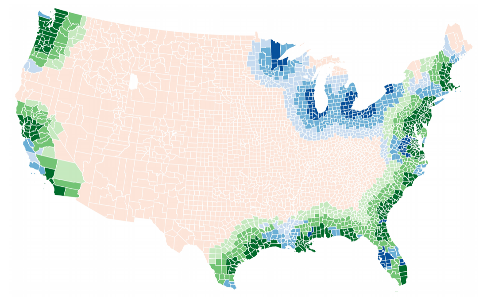
Green counties are near a container port in 2010 and near a port 30 feet deep or more in 1953. Blue counties are near a container port only. Figure 3b of the 2018 working paper (Federal Reserve, FEDS 2018-045).
When sonar, radar and LiDAR appeared
Sonar came first, in the 1910s, and radar in the 1930s. LiDAR needed the laser, which was invented in 1960.
Each date comes from the agency’s or the paper’s own page. The list is on the session page.
Common uses of radar and LiDAR
Governments and companies use radar and LiDAR every day.
USGS mapped Alaska with radar, because clouds cover it so often (USGS).
You can download the data from LidarExplorer, The National Map, or Amazon’s cloud without an account. The data are US government work and in the public domain (AWS Open Data).
LiDAR data outside the US
Several other countries publish free LiDAR data for the whole country.
England covered the whole country from 2017 to 2023 (Environment Agency).
The Netherlands has flown the country four times. The latest flight has about 10 to 14 points per m² (AHN).
Switzerland has covered the whole country since 2024 (swisstopo).
Spain has flown the country three times since 2009 (IGN, PNOA-LiDAR).
GEDI is a NASA LiDAR on the International Space Station. It measures the height of forests in spots 25 m wide, along tracks 600 m apart.
GEDI samples the land between 51.6° N and 51.6° S (GEDI). Most of the ground between its tracks is never measured. The Dutch data are called AHN.
LiDAR coverage in the US
USGS has LiDAR data for 88% of the lower 48 states.
A project is one area that USGS had flown in one campaign.
Inside each coloured area, the data cover the whole area.
The grey areas have no data in this archive yet. USGS lists newer projects for most of them.
The colours give the year each project was flown. I checked 267 random locations inside the coloured areas, and 265 have LiDAR points within 300 m. The map shows the 2,284 projects in USGS’s archive on Amazon’s cloud.
2 · Radar data in R
Overview of part 2
In this part we read radar data in R.
We read the radar elevation raster of Tompkins County.
We subtract USGS’s ground elevation. What is left is the height of trees and buildings.
We look at weather radar images of a hail storm in the Plains.
We add up radar hail by county and compare it with hail reports. This is my own preliminary work.
To run the code, download 25-radar-lidar.zip (53 MB), unzip it and open 25-radar-lidar.Rproj.
Later in this part: radar hail by county on 12 June 2022.
Radar elevation in Tompkins County
rast() reads the radar elevation raster of Tompkins County.
The Copernicus program made it from two radar satellites (TanDEM-X), from 2011 to 2013.
Radar elevation is published as a raster, in GeoTIFF files. Nobody downloads the raw echoes.
Before class I put it on the same 30 m cells as USGS’s elevation raster.
R Console, in the 25-radar-lidar folder; installs missing packages
R Console, in the 25-radar-lidar folder; reads data_clean/radar/ and data_clean/terrain/
rad <-rast("data_clean/radar/tompkins_copernicus_utm.tif") # radar elevation, m, 30 m cellsdem <-rast("data_clean/terrain/tompkins_dem_utm.tif") # USGS ground elevation, mcompareGeom(rad, dem) # TRUE: the same cells#> [1] TRUE
Radar elevation minus ground elevation
Radar elevation includes trees and buildings. On half of Tompkins County it sits more than 5 m above the ground.
USGS publishes the elevation of the ground, without trees or buildings.
Both rasters have 30 m cells on the same grid. We subtract them cell by cell.
The median gap is 4.6 m. Newfield has the most land above 5 m (71%), and Lansing the least (28%).
Radar elevation is the top of trees and roofs. It is not the ground.
Radar elevation minus USGS’s ground elevation, in 30 m cells. I have not checked against a land cover map that the green cells are forest.
Radar minus ground elevation in R
We subtract the two rasters, keep the county and drop Cayuga Lake.
R Console, in the 25-radar-lidar folder; rad and dem from the slide before
towns <-st_read("data_clean/terrain/tompkins_towns.gpkg", quiet =TRUE)diff <-mask(rad - dem +0.49, vect(towns)) # radar minus ground in the county, mdiff[dem <116.45] <-NA# drop Cayuga Lakev <-values(diff, na.rm =TRUE)round(c(median_m =median(v), pct_above_5m =100*mean(v >5)), 1)#> median_m pct_above_5m #> 4.6 48.6
The two rasters start from zero levels about 0.49 m apart, so I add 0.49 m. USGS’s raster puts Cayuga Lake at 115.95 m, so cells below 116.45 m are lake.
Weather radar images of a hail storm
NOAA combines its weather radars into one raster of the country, in cells of about 1 km.
Reflectivity is the strength of the echo. Large drops and hail send back the strongest echoes, in red and purple. Panel a is one image, at midnight Central. NOAA makes a new one every 2 minutes. Panel b is the largest hail in each cell over 24 hours. Each streak is the path of one storm.
Reading the radar hail raster in R
rast() reads the radar hail raster, and extract() gives the largest hail in each county.
NOAA publishes these rasters in a weather format called GRIB2. terra reads it.
I saved the seven states as a GeoTIFF. Each cell holds the largest hail in mm.
91 counties had hail of 1 inch (25.4 mm) or more.
R Console, in the 25-radar-lidar folder; reads data_clean/hail/
mesh <-rast("data_clean/hail/mesh_20220612.tif") # largest hail in each cell, mmmesh#> size : 1220, 1970, 1 (nrow, ncol, nlyr)#> resolution : 0.01, 0.01 (x, y)#> extent : -109.1, -89.4, 36.9, 49.1 (xmin, xmax, ymin, ymax)#> coord. ref. : lon/lat WGS 84 (EPSG:4326)#> max value : 101.400002counties <-vect("data_clean/hail/counties_7states.gpkg")big <-extract(mesh, counties, fun = max) # largest hail in each countysum(big[, 2] >=25.4) # counties with hail of 1 inch or more
Radar hail by county, 12 June 2022
I added up the radar hail raster by county, because hail reports and insurance losses come by county.
A county’s colour is its area with radar hail of 1 inch or more, in km².
A white dot marks a county where someone filed a hail report.
Radar saw hail in 91 counties. Only 17 of them have a report.
This is my own preliminary work. Radar hail is NOAA’s MRMS estimate. Hail reports come from NOAA’s Storm Events database.
Radar hail, hail reports and crop insurance
I compared radar hail with hail reports and with crop insurance payments for hail.
56% of county-days with 25 km² or more of radar hail of 1 inch or more have no hail report.
Radar predicts hail losses better than reports do. Take a county-month with more than $100,000 of hail losses and one without. Radar ranks the one with losses higher 85% of the time, and the number of reports 73% of the time.
R Console, in the 25-radar-lidar folder; reads data_clean/hail/hail_county_day.csv
hail <-read.csv("data_clean/hail/hail_county_day.csv", colClasses =c(geoid ="character"))big <- hail[hail$km2_1in >=25, ] # 25 km2 or more of hail of 1 inch or moreround(100*mean(big$reports ==0)) # percent of these county-days with no report#> [1] 56
This is my own preliminary work. A county-day is one county on one day. The data cover 567 counties in CO, IA, KS, MN, NE, ND and SD, April to September 2021 to 2025.
3 · LiDAR data in R
Overview of part 3
In this part we read the LiDAR data for Cornell’s campus in R.
We use the USGS LiDAR data collected over campus in May 2020.
We read the points with the lidR package.
We build three rasters: the ground, the top of buildings and trees, and the height of buildings and trees.
We check them on a lawn, on a wider map with the gorges, and against radar.
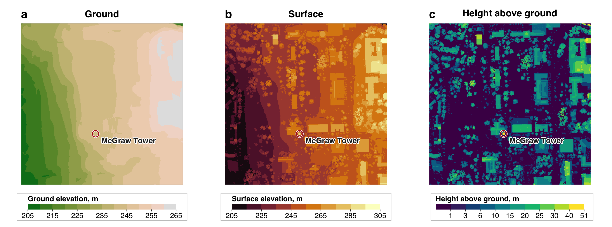
Later in this part: the three rasters around McGraw Tower.
From New York to the campus
The LiDAR data for Ithaca come from a USGS project over the Finger Lakes in May 2020.
54 USGS projects cover parts of New York State.
I cut out a square of 600 m by 600 m around McGraw Tower, Cornell’s clock tower. Panel c shows this square.
The colours in panel c show the height of buildings and trees in each 1 m cell.
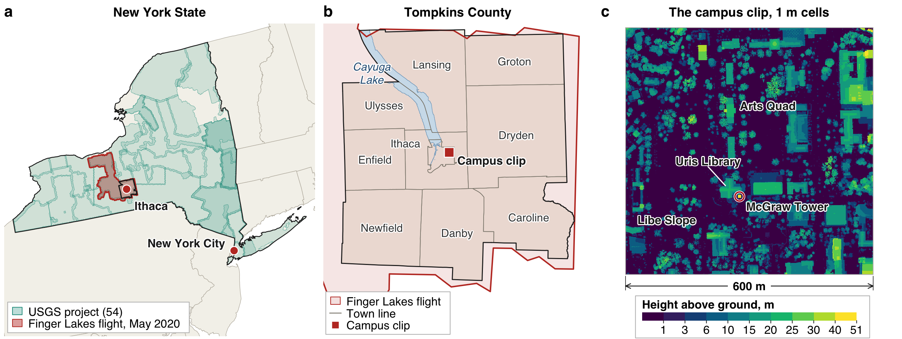
The Finger Lakes are the lakes around Ithaca. The campus was flown on 13 May. Uris Library and the tower stand at the top of Libe Slope, a hillside lawn. The Arts Quad is the campus’s main lawn.
Reading LiDAR data in R
The lidR package reads LiDAR data in R.
LiDAR points come in LAS files, or LAZ files when compressed. readLAS() reads both.
The file has 2.31 million points, about 6 points per m².
Each point has an x and a y in metres (UTM zone 18N), and an elevation.
R Console, in the 25-radar-lidar folder, packages loaded in part 2; reads data_clean/lidar/campus.laz
las <-readLAS("data_clean/lidar/campus.laz") # about 2 seconds
las#> extent : 377600, 378200, 4700350, 4700950 (xmin, xmax, ymin, ymax)#> coord. ref. : NAD83(2011) / UTM zone 18N #> points : 2.31 million points#> density : 6.43 points/m²#> density : 5.05 pulses/m²
Ground points
USGS labels each point with a class.
Class 2 means the laser hit the ground. 56% of the campus points are ground points.
Class 1 is anything above the ground, such as buildings and trees.
Classes 7 and 18 are errors, such as birds. I remove them.
R Console, in the 25-radar-lidar folder; las from readLAS() on the slide before
table(las$Classification) # 1 other, 2 ground, 7 and 18 noise#> #> 1 2 7 18 #> 1021378 1287582 3503 29las <-filter_poi(las, !Classification %in%c(7, 18)) # drop the noisenpoints(las)#> [1] 2308960
Some projects also label buildings (class 6) and trees and shrubs (classes 3 to 5). The campus project and the New York City project do not.
A slice through McGraw Tower
Seen from the side, the points show Libe Slope, Uris Library, McGraw Tower and the trees.
The red line on the map is a strip 10 m wide, from west to east.
Each dot is one point in the strip. Brown dots are ground points (class 2).
Some pulses pass between the leaves, so we see the ground under the trees.
Teal dots are the other points (class 1). The vertical scale is doubled. The highest point on the tower is 294.62 m above sea level.
Ground elevation
rasterize_terrain() builds a raster of ground elevation from the ground points.
Each cell is 1 m by 1 m.
Under a building there are no ground points. R fills those cells from the ground points around the building.
This raster is called a digital terrain model (DTM).
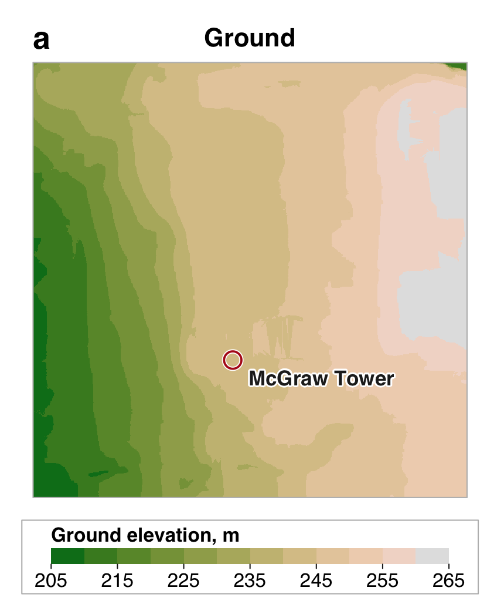
tin() joins nearby ground points into triangles and reads the elevation off them. The ring marks McGraw Tower.
R Console, in the 25-radar-lidar folder; las, the campus points without noise
ground <-rasterize_terrain(las, res =1, algorithm =tin()) # bare ground, 1 m cells
Surface elevation
rasterize_canopy() builds a raster of the elevation of the top of buildings and trees.
p2r() puts each point in its 1 m cell and keeps the highest one.
Where nothing stands on the ground, the cell has the ground elevation.
This raster is called a digital surface model (DSM).
3,278 cells have no point, mostly on dark roofs where no pulse came back. na.fill = tin() fills them with triangles, as for the ground.
R Console, in the 25-radar-lidar folder; las, the campus points without noise
surface <-rasterize_canopy(las, res =1, algorithm =p2r(na.fill =tin())) # top point
The height of buildings and trees
We subtract the ground elevation from the surface elevation.
The result is the height of buildings and trees above the ground.
Open ground has a height of 0.
The tallest object on campus is McGraw Tower, at 50.6 m.
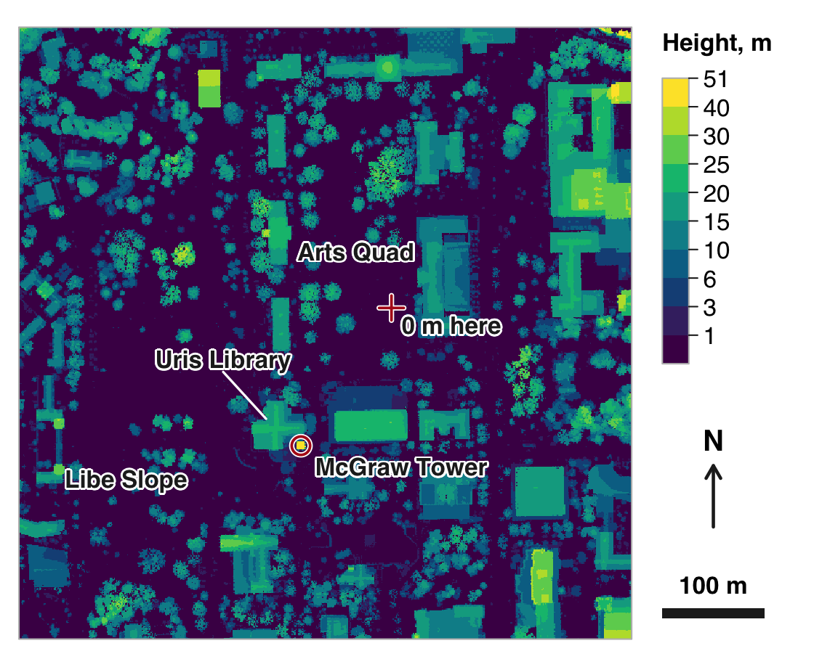
The code prints the lowest height first, then the highest. A few cells are just below 0 m, and the lowest is −3.3 m.
R Console, in the 25-radar-lidar folder; ground and surface from the slides before
We check the rasters on the Arts Quad lawn, where the height should be 0 m.
A lawn has no roof or tree, so its surface and ground elevations should be the same.
Both elevations are 245.7 m, so the height is 0 m. The two rasters line up.
If the rasters were shifted, the lawn would have a height of several metres.
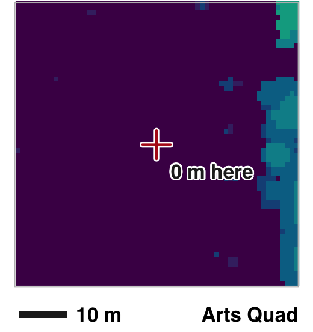
The location is in the raster’s own coordinates, metres east and north. The tallest cell within 5 m has a height of 0.09 m.
R Console, in the 25-radar-lidar folder; ground, surface, height from the slides before
g3 <-c(ground, surface, height); names(g3) <-c("ground", "surface", "height")lawn <-vect(cbind(377964.8, 4700674.7), crs =crs(g3)) # a point on the Arts Quad lawnround(extract(g3, lawn), 2)#> ID ground surface height#> 1 1 245.7 245.7 0
A wider view of campus
The same steps on a 1.6 km square show the Ag Quad and both gorges.
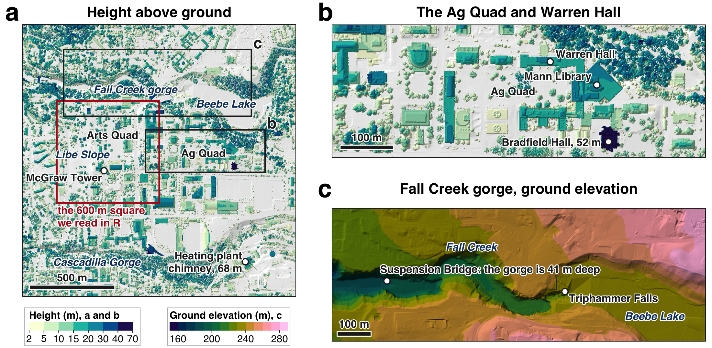
13 million points from the same USGS flight. Fall Creek gorge is 41 m deep at the Suspension Bridge, and Cascadilla Gorge is 30 m deep. Bradfield Hall, at 52 m, is taller than McGraw Tower.
Explore the campus map
We can zoom and pan the three rasters. The buttons switch between ground, surface and height.
Scroll to zoom, drag to pan, double click to reset. The map also opens in its own tab.
Cornell’s campus by radar and by LiDAR
Radar from a satellite gives one elevation for each 30 m cell. LiDAR from a plane gives one for each 1 m cell.
In the radar map, the cell with McGraw Tower has an elevation of 249 m. The top of the tower is at 295 m.
Radar sees the top of trees and roofs. LiDAR also reaches the ground under the trees.
I downloaded the radar data from the Copernicus program. It is free and comes from two radar satellites (TanDEM-X), 2011 to 2013 for this area. The LiDAR data are from the USGS flight of May 2020.
4 · Heights of buildings and trees
Overview of part 4
In this part we measure the height of buildings and compare it with published heights.
We start with a study that measured every building in Nairobi with LiDAR.
We measure McGraw Tower and compare our number with Cornell’s.
We measure the Empire State Building with LiDAR data for New York City.
In Exercise 1 you merge the 1 m cells into 5 m and 10 m cells. Then you measure the tower again.
Later in this part: McGraw Tower seen from the side, with one dot per point.
Method: They used building outlines traced from aerial photographs of 2003 and 2015. They took the height of each building from LiDAR data collected in 2015.
Data: All buildings in Nairobi, Kenya’s capital.
Result: In the formal centre of the city, a third of the buildings were torn down in 12 years. The new buildings were three times taller.
A slum is housing built without formal title or permits. The figure plots mean building height against distance from the centre. Blue lines are formal buildings, red lines slums, and dashed lines rebuilt ones. Figure 7 of the authors’ accepted version (LSE Research Online).
The height of McGraw Tower
Our height for McGraw Tower is 50.6 m.
Cornell reports 173 feet, which is 52.7 m.
Our number is 2.1 m lower. The top of the tower is narrow, and the laser may have missed its tip.
Cornell Chronicle, 3 September 2025: “the 173-foot-tall landmark”. Each dot is one point in a strip 10 m wide through the tower, at true scale.
Measuring McGraw Tower in R
To measure the tower, we look at the cells within 20 m of it.
buffer() draws a circle of 20 m around the tower.
extract() returns the 1,248 cells inside the circle. The tallest has a height of 50.6 m.
g3 stacks the three campus rasters: ground, surface and height.
R Console, in the 25-radar-lidar folder; g3, the three rasters stacked on the lawn slide
tower <-vect(cbind(377876.1, 4700539.6), crs =crs(g3)) # McGraw Towerzone <-buffer(tower, 20) # every cell within 20 me <-extract(g3, zone)nrow(e)#> [1] 1248e[which.max(e$height), ] # the tallest of them#> ID ground surface height#> 587 1 244.019 294.62 50.601
The tower’s location is in the raster’s own coordinates, metres east and north. buffer() is terra’s version of st_buffer().
The height of the Empire State Building
Our height for the Empire State Building is 440.3 m above the street.
I used the LiDAR data from a USGS flight over Manhattan in March 2014.
The owners report 1,454 feet (443.2 m) to the tip of the antenna.
Our tallest 1 m cell is on the mast, 2.9 m below its tip.
Each dot is one point within 60 m of the centre of the building.
The highest occupied floor is at 1,250 feet (381 m). The mast stands above it (esbnyc.com, Facts & Figures).
The Empire State Building in 30 m cells
In 30 m cells, our height for the Empire State Building falls to 323.7 m.
aggregate() merges blocks of cells into one larger cell. Here it merges 30 by 30 cells.
30 m is the size of a pixel in free satellite images.
esb is the 1 m height raster around the building. I built it like the campus rasters.
b is a circle of 60 m around the centre of the building.
R Console, in the 25-radar-lidar folder; reads data_clean/lidar_nyc/esb_height.tif
esb <-rast("data_clean/lidar_nyc/esb_height.tif") # height above ground, 1 mb <-buffer(vect(cbind(585631.7, 4511326.9), crs =crs(esb)), 60) # 60 m around the buildingmax(extract(esb, b)[[2]], na.rm =TRUE)#> [1] 440.31esb30 <-aggregate(esb, fact =30, fun ="mean") # 30 x 30 cells into onemax(extract(esb30, b)[[2]], na.rm =TRUE)#> [1] 323.709
In 30 m cells the building keeps 74% of its height (323.7 of 440.3 m). The coordinates of the centre are metres east and north.
In 10 m cells McGraw Tower loses most of its height.
4 minutes. Measure the tower in 5 m and 10 m cells. height is the height raster from part 3. zone is the 20 m circle around McGraw Tower.
h5 <- aggregate(height, fact = 5, fun = "mean") makes 5 m cells.
max(extract(h5, zone)[[2]], na.rm = TRUE) gives the tallest cell.
Repeat steps 1 and 2 with fact = 10.
Divide each by 50.6 m. Compare with the Empire State Building’s 74% in 30 m cells.
Share two answers with the class: the tower’s height in 10 m cells and the share of its height it keeps. Without lidR, read data_clean/lidar/campus_height.tif with rast() and build zone as on slide 28.
R Console, in the 25-radar-lidar folder; height and zone from the slides before
The tower keeps 37% of its height in 10 m cells. The Empire State Building keeps 74% in 30 m cells (323.7 of 440.3). Only 62 cells near the tower are taller than 40 m. A 10 m cell mixes the tower with the lawn and roofs around it.
5 · Slope and views
Overview of part 5
In this part we use an elevation raster to measure slope and views.
The data are USGS’s elevation raster of Tompkins County, with 30 m cells.
For slope, we compute each town’s share of land steeper than 15%.
For views, we find the land we can see from the top of McGraw Tower. In Exercise 2 you do the same from the ground.
Three studies used hills and rivers to predict who got a dam, television or radio.
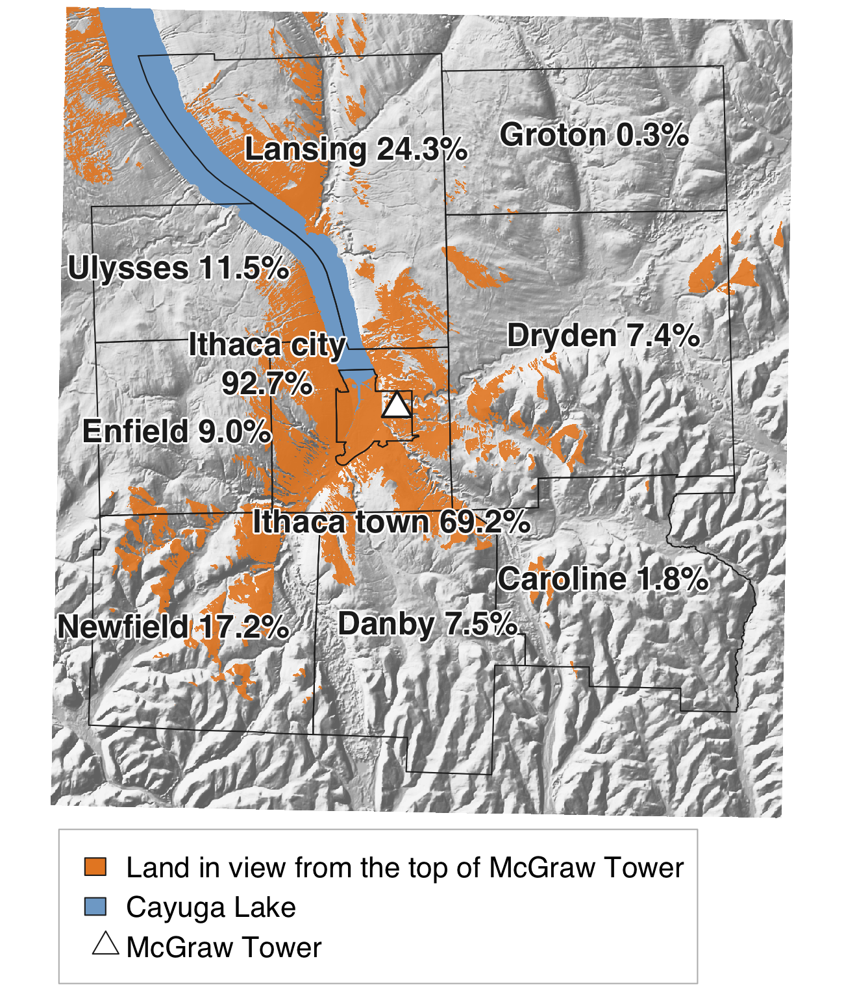
Later in this part: the land in view from the top of McGraw Tower.
Method: He measured the share of land within 50 km of each city centre that is water or steeper than 15%.
Data: He used a USGS elevation raster with 90 m cells, satellite maps of water and wetlands, and US metro areas.
Result: Most metro areas that build few new homes when prices rise are surrounded by water and steep slopes.
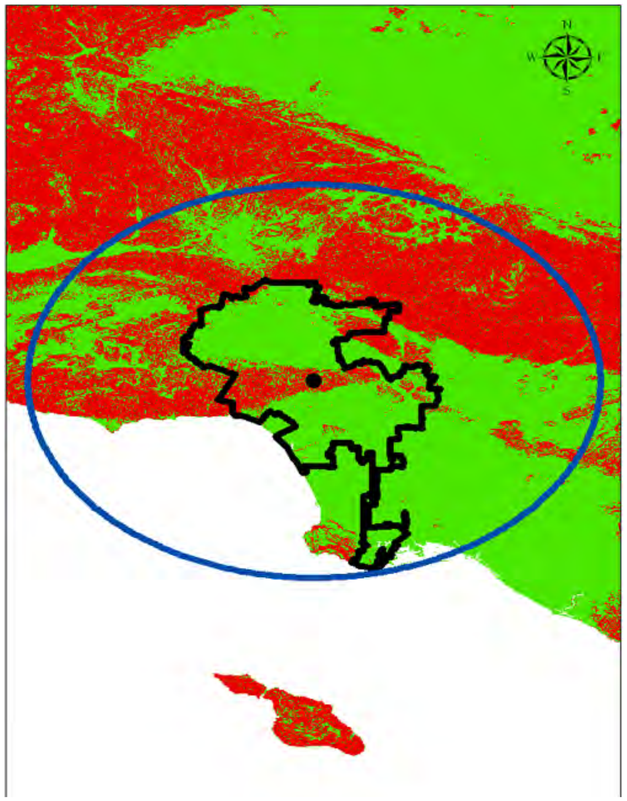
Inelastic supply means few new homes get built when prices rise. The figure is Figure 1.D of the 2008 working paper, “Embedding LA Data into 50km Radius”. Red is steeper than 15%, and the blue ring is 50 km around Los Angeles.
Elevation in Tompkins County
USGS publishes an elevation raster of Tompkins County with 30 m cells.
Tompkins County is the county around Ithaca.
The elevation goes from 115.95 m at the surface of Cayuga Lake to 639.68 m.
The county has nine towns and the city of Ithaca. In New York, a town is the level of government below the county.
In the next slides we compute slope and views from this raster.
Reading the elevation raster and towns
rast() reads the elevation raster, and st_read() reads the ten town polygons.
The raster has 1,521 by 1,394 cells.
I projected USGS’s raster to metres (UTM zone 18N) before class. Slope then comes out in metres per metre.
ALAND is the land area of each town in m², from the Census.
R Console, in the 25-radar-lidar folder; reads data_clean/terrain/
dem <-rast("data_clean/terrain/tompkins_dem_utm.tif") # elevation, m, 30 m cellstowns <-st_read("data_clean/terrain/tompkins_towns.gpkg", quiet =TRUE)dem#> size : 1521, 1394, 1 (nrow, ncol, nlyr)#> resolution : 30, 30 (x, y)#> coord. ref. : NAD83 / UTM zone 18N (EPSG:26918)#> min value : 115.949997#> max value : 639.68335
USGS’s own cells are 1 arc-second (1/3600 of a degree), about 30 m.
Slope with terrain()
terrain() computes the slope of each cell from its eight neighbours.
Slope is rise over run. A slope of 15% means 15 m of rise over 100 m, or 8.5 degrees.
terrain() returns the slope as an angle. tan() turns it into rise over run, and multiplying by 100 gives percent.
The red cells on the map are steeper than 15%.
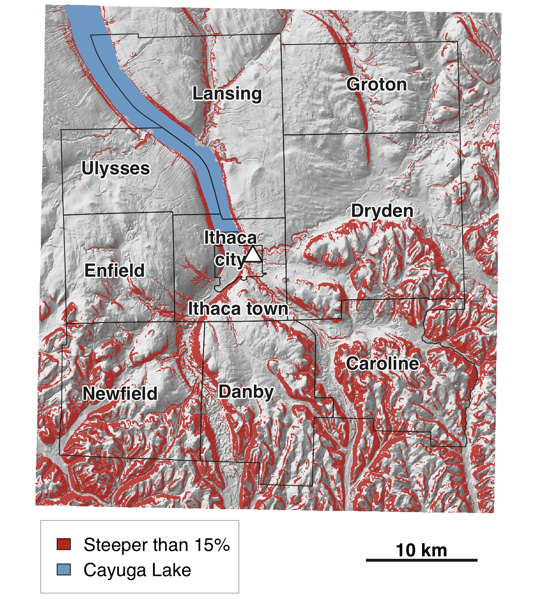
R Console, in the 25-radar-lidar folder; dem from the slide before
slope_pct <-tan(terrain(dem, v ="slope", unit ="radians")) *100# percentsteep <- slope_pct >15# TRUE where steeper than 15%
Steep land in each town
In Newfield and Caroline, about a third of the land is steeper than 15%.
In Ulysses, only 4.5% of the land is that steep.
exact_extract() adds up the steep area in each town. Each 30 m cell is 900 m², so steep * 900 is the area of each steep cell.
I divide by the Census land area, ALAND, because three towns reach into Cayuga Lake.
R Console, in the 25-radar-lidar folder; steep and towns from the slides before
s <-exact_extract(steep *900, towns, "sum", progress =FALSE) # m2 steeper than 15%d <-data.frame(town = towns$NAMELSAD, pct_of_land =round(100* s / towns$ALAND, 1))d[order(-d$pct_of_land), ]#> town pct_of_land#> 5 Newfield town 32.8#> 8 Caroline town 31.5#> 2 Danby town 25.5#> 1 Ithaca city 18.3#> 7 Ithaca town 16.3#> 3 Dryden town 13.7#> 4 Enfield town 6.9#> 10 Lansing town 6.8#> 9 Groton town 5.4#> 6 Ulysses town 4.5
In the whole county, 205.7 of 1,229.3 km² of land is steeper than 15%. That is 16.7%.
Method: He computed the viewshed of each wind farm on an elevation raster with 90 m cells. Then he compared changes in house prices where turbines came into view.
Data: Home sales in England and Wales from 2000 to early 2012, and 148 wind farms in operation.
Result: House prices fell 5 to 6% where a wind farm came into view within 2 km.
A viewshed is the land you can see from a point. A hedonic study uses house prices to measure what people pay for a view, a park or clean air. Light grey is land that sees at least one turbine tip, and dark dots are the postcodes of homes. Figure 3 of the accepted version (LSE Research Online), one wind farm in north east England.
The view from McGraw Tower
From the top of McGraw Tower, we can see 236.5 km² of land and lake.
We can see 92.7% of the land in the city of Ithaca and 7.4% of the land in Dryden.
Orange cells are in view. Each town’s label gives the share of its land in view.
I put the eye 53 m up, at the top of the tower. Cornell reports 52.7 m.
Computing the view in R
viewshed() returns TRUE for each cell we can see from the tower.
tw is McGraw Tower. viewshed() draws a line of sight from it to every cell.
observer = 53 puts the eye 53 m above the tower’s cell. target = 0 asks whether we can see the ground itself.
Each cell is 30 × 30 = 900 m². land drops the lake, whose surface is flat at 115.95 m.
R Console, in the 25-radar-lidar folder; dem (the 30 m raster) and towns from the slides before
tw <-project(vect(cbind(-76.48505, 42.44757), crs ="EPSG:4326"), crs(dem)) # McGraw Towertop <-viewshed(dem, crds(tw), observer =53, target =0) # TRUE where visibleround(global(top, "sum", na.rm =TRUE)[[1]] *900/1e6, 1) # km2 in view#> [1] 236.5land <- dem >116.45# 0.5 m above the lake's flat surfacetowns$top <-round(100*exact_extract(top * land *900, towns, "sum", progress =FALSE) / towns$ALAND, 1)
viewshed() accounts for the curve of the Earth. It took 0.06 seconds.
4 minutes. Compute the view from the foot of the tower, 1.7 m up. dem is the 30 m raster and tw the tower. land marks the cells above the lake, and towns holds the towns.
Each town’s share of land in view, in a column towns$gnd.
towns[, c("NAMELSAD", "top", "gnd"), drop = TRUE] shows both columns.
Share with the class the area in view from the ground and the towns that lose all their view.
R Console, in the 25-radar-lidar folder; dem, tw, land and towns from the slides before
gnd <-viewshed(dem, crds(tw), observer =1.7, target =0)round(global(gnd, "sum", na.rm =TRUE)[[1]] *900/1e6, 1)#> [1] 124.6towns$gnd <-round(100*exact_extract(gnd * land *900, towns, "sum", progress =FALSE) / towns$ALAND, 1)towns[, c("NAMELSAD", "top", "gnd"), drop =TRUE]#> NAMELSAD top gnd#> 1 Ithaca city 92.7 55.3#> 2 Danby town 7.5 4.3#> 3 Dryden town 7.4 0.0#> 4 Enfield town 9.0 4.9#> 5 Newfield town 17.2 14.1#> 6 Ulysses town 11.5 7.7#> 7 Ithaca town 69.2 44.5#> 8 Caroline town 1.8 0.5#> 9 Groton town 0.3 0.0#> 10 Lansing town 24.3 12.6
From the ground, the view shrinks from 236.5 to 124.6 km². The share of the county’s land in view falls from 14.6% to 8.1%. Dryden drops from 7.4% to zero, and Groton from 0.3% to zero.
Turning the view into polygons
To join the view with home sales or farm fields, we turn it into polygons.
Gibbons joined views to homes in the same way.
top is the view raster from viewshed(). ifel(top, 1, NA) keeps the cells in view.
as.polygons() turns these cells into polygons. disagg() splits them into 758 separate pieces.
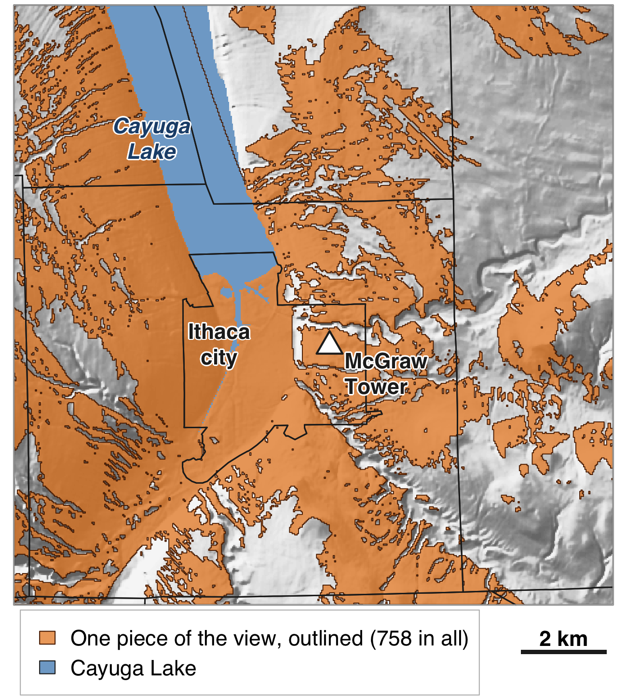
R Console, in the 25-radar-lidar folder; top, the view raster from viewshed()
view <-disagg(as.polygons(ifel(top, 1, NA))) # one polygon per separate piecenrow(view)#> [1] 758
Terrain as an instrument
Three papers used terrain as an instrument.
An instrument changes who gets a treatment. It affects the outcome only through that treatment.


_at_NS_Mayport_2013.JPG){kind=link}